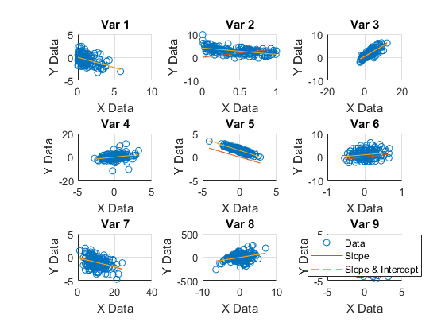

Contents
Week 2 Assignment
clc clear all % % load('data.mat')
Manually Calculate Linear Regression Relation
sizeData = size(data.x); figure; for ii = 1:sizeData(2) x = data.x(:,ii); y = data.y(:,ii); subplot(3,3,ii) b1 = x\y; % Find the linear regression relation y=?1*x. The \ operator performs a least-squares regression. yCalc1 = b1*x; scatter(x,y) hold on plot(x, yCalc1) %Improve the fit by including a y-intercept ?0 in your model as y=?0+?1x. Calculate ?0by padding x with a column of ones and using the \ operator. hold on X = [ones(length(x),1) x]; b = X\y; yCalc2 = X*b; plot(x,yCalc2,'--') grid on title(sprintf('Var %i',ii)); xlabel('X Data') ylabel('Y Data'); end legend('Data','Slope','Slope & Intercept','Location','best');
Use MatLab Linear Model to find coefficients
load carsmall
X = [Weight, Horsepower, Acceleration];
mdl = fitlm(X,MPG)
mdl =
Linear regression model:
y ~ 1 + x1 + x2 + x3
Estimated Coefficients:
Estimate SE tStat pValue
____________________ ___________________ ___________________ ____________________
(Intercept) 47.9767628118615 3.87851641748551 12.369874881944 4.89570341689011e-21
x1 -0.00654155878851795 0.00112741016370336 -5.80228828790225 9.87424814144022e-08
x2 -0.0429433065881864 0.0243130608813806 -1.76626492228599 0.0807803098213113
x3 -0.0115826516894869 0.193325043113178 -0.0599128364487476 0.952359384151779
Number of observations: 93, Error degrees of freedom: 89
Root Mean Squared Error: 4.09
R-squared: 0.752, Adjusted R-Squared 0.744
F-statistic vs. constant model: 90, p-value = 7.38e-27
The model display includes the model formula, estimated coefficients, and model summary statistics.
The model formula in the display, y ~ 1 + x1 + x2 + x3, corresponds to y=? 0 +? 1 X 1 +? 2 X 2 +? 3 X 3 +?.
The model display also shows the estimated coefficient information, which is stored in the Coefficients property. Display the Coefficients property.
mdl.Coefficients
ans =
4×4 table
Estimate SE tStat pValue
____________________ ___________________ ___________________ ____________________
(Intercept) 47.9767628118615 3.87851641748551 12.369874881944 4.89570341689011e-21
x1 -0.00654155878851795 0.00112741016370336 -5.80228828790225 9.87424814144022e-08
x2 -0.0429433065881864 0.0243130608813806 -1.76626492228599 0.0807803098213113
x3 -0.0115826516894869 0.193325043113178 -0.0599128364487476 0.952359384151779
The Coefficient property includes these columns:
Estimate — Coefficient estimates for each corresponding term in the model. For example, the estimate for the constant term (intercept) is 47.977.
SE — Standard error of the coefficients.
tStat — t-statistic for each coefficient to test the null hypothesis that the corresponding coefficient is zero against the alternative that it is different from zero, given the other predictors in the model. Note that tStat = Estimate/SE. For example, the t-statistic for the intercept is 47.977/3.8785 = 12.37.
pValue — p-value for the t-statistic of the hypothesis test that the corresponding coefficient is equal to zero or not. For example, the p-value of the t-statistic for x2 is greater than 0.05, so this term is not significant at the 5% significance level given the other terms in the model.
The summary statistics of the model are:
Number of observations — Number of rows without any NaN values. For example, Number of observations is 93 because the MPG data vector has six NaN values and the Horsepower data vector has one NaN value for a different observation, where the number of rows in X and MPG is 100.
Error degrees of freedom — n – p, where n is the number of observations, and p is the number of coefficients in the model, including the intercept. For example, the model has four predictors, so the Error degrees of freedom is 93 – 4 = 89.
Root mean squared error — Square root of the mean squared error, which estimates the standard deviation of the error distribution.
R-squared and Adjusted R-squared — Coefficient of determination and adjusted coefficient of determination, respectively. For example, the R-squared value suggests that the model explains approximately 75% of the variability in the response variable MPG.
F-statistic vs. constant model — Test statistic for the F-test on the regression model, which tests whether the model fits significantly better than a degenerate model consisting of only a constant term.
p-value — p-value for the F-test on the model. For example, the model is significant with a p-value of 7.3816e-27.
You can find these statistics in the model properties (NumObservations, DFE, RMSE, and Rsquared) and by using the anova function.
Let's try with our data!
newDataVars = [Size, Performance, Span];
Now, I already have prior knowledge about 2 things in my data. (1) Size and performance are directly related, and (2) span directly relates to DC.
% md2 = fitlm(newDataVars, DC);